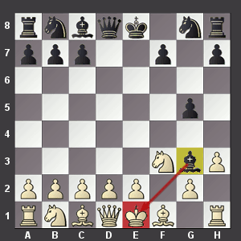

The Goal of Chess: The Goal of chess is to simply capture the King. To do this you must put the king into a position where he cannot get out of. Here are some examples of a win:
When playing chess you want to move your pawns so you can get your stronger peices to me exposed to the rest of the board (refer to How to setup the chess board to see where the peices are positioned on the board). This will help you improve your play and have an advantage over the other player. Sometimes a good starting move is to make your knight jump over the pawns because it is a stronger piece.
Return Home